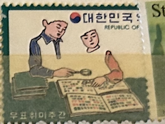
| SOURCE | TITLE| IMAGE MATCH | click to source page |
| NAVER | 1972년우표~1974년옛날우표 : 네이버 블로그 | 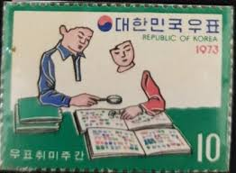 |
| eBay | Korea Scott# 664a / 67a Fairy Tales Souvenir Hojas Timbre Nh Scott | eBay | 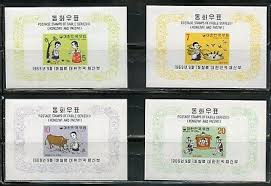 |
| eBay | KOREA - SCOTT# 664-667 - SOUVENIR SHEET & PERF STAMPS - CS - MNH - CAT VAL $74.0 | eBay | 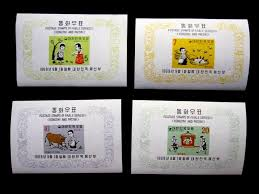 |
| eBay | New Year's Greeting,Zodiac,Year of Monkey,Korea 1979 FDC,Cover | eBay | 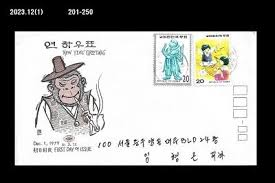 |
| Korea Stamp Society | A Basic Introduction to the post-WWII Liberation use of Japanese Postcards in South Korea, 1946-47 — Korea Stamp Society | 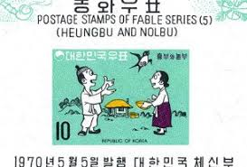 |
| Korea Stamp Society | The Tale of Hŭngbu and Nŏlbu (Folklore on South Korean Stamps 1) — Korea Stamp Society | 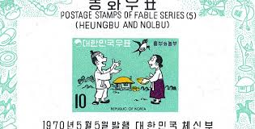 |
| eBay | Briefmarken mit Post- & Kommunikations-Motiven aus Korea online kaufen | eBay | 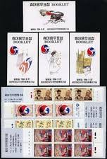 |
| Lee Clark Stamps | Lee Clark Stamps: Store - '' Lots | 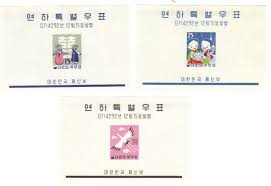 |
| Mystic Stamp Company | 298a/300a - 1959 Korea - Mystic Stamp Company | 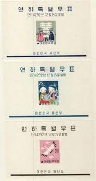 |
| eBay | Korea Fable 1969 Tales Wedding Ox Bird (ms) MNH *see scan | eBay | 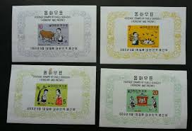 |
| eBay | South Korea Stamps: 1959 Christmas & New Year Souvenir Sheets (3). Mint Hinged. | eBay | 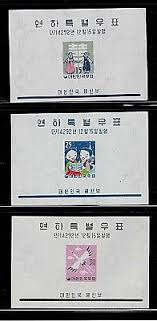 |
| 국가기록포털 | 우표와 포스터 | 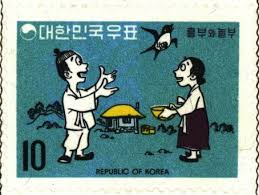 |
| eBay | KOREA #298a-300a, Mint Never Hinged, Souvenir sheets, Scott $81.00 | eBay | 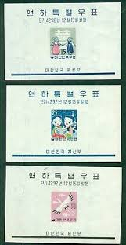 |
| Colnect | Stamp: Schoolmaster and children from Mengkkong-i Seodang school (Korea, South(Cartoon Series) Mi:KR 2241,Sn:KR 2080,Yt:KR 2046,Sg:KR 2594,WAD:KR022.2002 📮 | 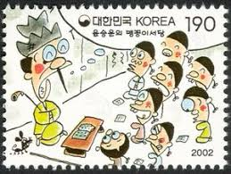 |
| pixels.com | 1965 Korea Children Sledding Postage Stamp Women's T-Shirt by Retro Graphics - Retro Graphics Official Website | 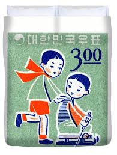 |
| The National Consortium for Teaching about Asia | Every Falling Star: | 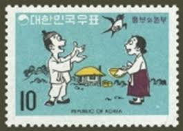 |
| eBay | Korea Scott #298a-300a never hinged | eBay | 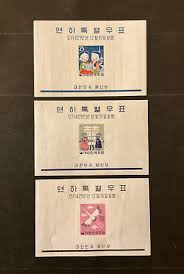 |
| eBay | Korea Scott #'s 298a - 300a sheets set VF never hinged mint cv $ 90 ! see pic ! | eBay | 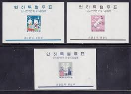 |
| Todocolección | corea del sur, 1980, en memoria del presidente - Buy Antique stamps of Korea on todocoleccion | 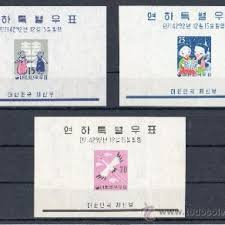 |
| eBay | Korea Sc 318a-320a MNH. 1960 Christmas & New Year issue, 3 imperf s/s, cplt set | eBay | 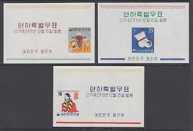 |
| eBay | South Korea Stamps: 1960 75th Ann. of Modern Educational System Imperf S/S MNH | eBay | 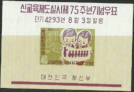 |
| eBay | South Korea 1959 Souvenir Sheet #299a Christmas - MNH | eBay | 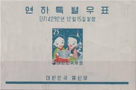 |
| eBay | Korea 1959 New Years Souvenir Sheet Scott# 298a-300a Mint Original Gum Hinged | eBay | 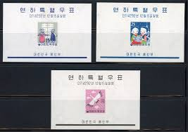 |
| eBay | History,The first postman in the Korean Empire,smoking pipe,Costume,Korea Cover | eBay | 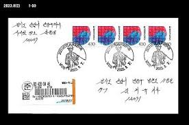 |
| 26.10.2025 Old stamp Rs 100 EELLUDEVENEZUEMA DG E.U.U,DEVENEZUEMD ENEZUELA চল ZUELA JENEZUELA E R EVENEZUEMA 5 0်9( CENMMOS 5 МЕСНЛИИΥЕСО AMSNECA ВАТКНСТЕС AWATO IMOS NOTAGOMENOTE वय OS 15 DICOKNTETIMO5 РЕ.СОКТАТЕ СОНЛаНАЕ ANN | 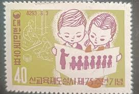 | |
| eBay | Korea S All 3 S/S Christmas & New Year of the Ox 1960 MNH-42 Euro | eBay | 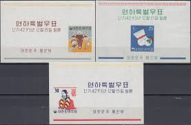 |
| eBay | Korea South 318-320,318a-320a,MNH. Christmas 1960.Lunar New Year of the Ox,1961. | eBay | 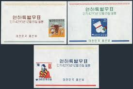 |
| Stamp Community Forum | Bull's-Eye! - Archery On Stamps - Page 7 - Stamp Community Forum | 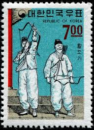 |
| eBay | Korea Postage Souvenir Sheet Scott 306a, MNH!! K98 | eBay | 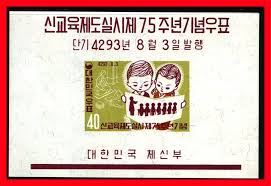 |
| My dream, (the nameplate : Kim Il Sung) south korea, 70s? 80s? : r/PropagandaPosters | ||
| Colnect | Stamp: Gangneung Danoje Festival, Gwanno mask drama (Korea, South(Oral and Intangible Heritage of Humanity Special ) Mi:KR 2623,Yt:KR 2415,Sg:KR 2966,WAD:KR059-07 📮 | 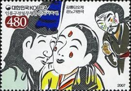 |
| eBay | KOREA LOT OF FIVE SOUVENIR SHEETS MINT NEVER HINGED--SCOTT VALUE $37.00 | eBay | 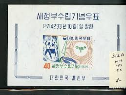 |
| eBay | Korea SC 306a MNH (6ehh) | eBay | 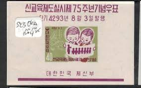 |
| kpolsson.com | Ken P's Coins on Postage Stamps | 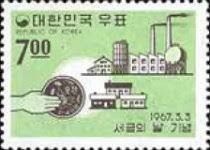 |
| schoolgirlmilkycrisis.com | Any Old Irony | The Official Schoolgirl Milky Crisis Blog | 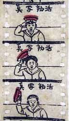 |
| eBay | S Korea Stamps: 1962 40th Ann. of Korean Boy Scouts. 2 Souvenir Sheets MH | eBay | 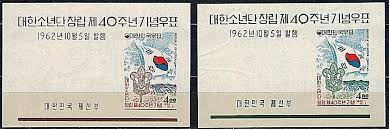 |
| HipStamp | Search "Korea (South Korea) 1967" / HipStamp | 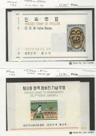 |
| Find Your Stamps Value | Teachers and Students by Kim Hong-do - 김홍도의 서당도 10w Black, Light green & rose stamp price, value | 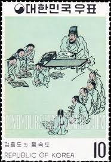 |
| Welcome to korea stamp portal system | 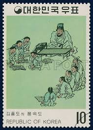 | |
| eBay | TIGER STAMP SHEET SOUVENIR SCOTLAND 1998 YEAR OF TIGER POSTAGE WILDLIFE CAT RED | eBay | 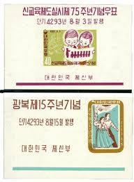 |
| eBay UK | Korea SC# 299a, Mint Hinged, Hinge Remnant - Lot 031917 | eBay UK | 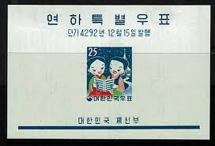 |
| Korea Stamp Society | International Women's Day (8 March) Featured in the Philately of the DPRK — Korea Stamp Society | 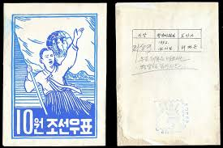 |
| Stamp Community Forum | Is There A Topic On The Sun? - Page 9 - Stamp Community Forum | 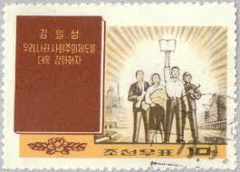 |
| eBay | Korea 1960 Sc # 318a-20a New Year s/s MNH (1663-5) | eBay | 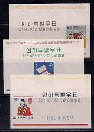 |
| HipStamp | EDSROOM-O6267 Korea 552a-54a MNH 1967 Folklore Series CV$10.75 | Asia - South Korea, General Issue Stamp / HipStamp | 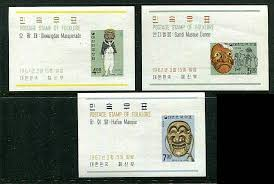 |
| jackiechankids.com | Jackie Chan's Build a School for a Dollar | 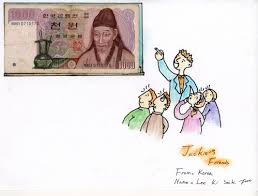 |
| Korea Stamp Society | The Four Categories of Korean Souvenir Sheets — Korea Stamp Society | 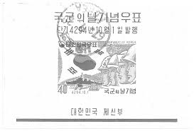 |
| owlsandbooks.co.uk | BOOK STAMPS KOREA (SOUTH) | 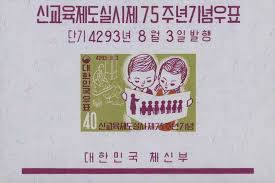 |
| eBay | KOREA (SOUTH) SC# 742a ECONOMIC DEVELOPMENT S/S - MNH | eBay | 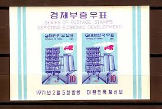 |
| eBay | Art, Artists Decimal Korean Stamps for sale | eBay | 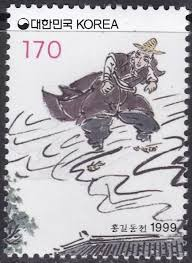 |
| Alamy | Postage stamp from South Korea in the Korean painting of the Yi Dynasty (5th series) issued in 1971 Stock Photo - Alamy |  |
| joins.com | Rare stamps and old-world charm | |
| The Soul of Seoul | Korea Postage Stamp Museum: Where To Teach Kids About Old School Mail – The Soul of Seoul | |
| eBay | Korea #301a MNH E203 7282 | eBay | |
| Tumblr | 제기차기 – @koreaandme on Tumblr | |
| eBay | 33728] Korea 1967 Folklore Masque Souvenir Sheet MNH BL.248-50 | eBay | |
| iStock | North Korean Postage Stamp Stock Photo - Download Image Now - North Korea, Communism, Cut Out - iStock | |
| Dreamstime.com | People, International Juche Idea Seminary Serie, Circa 1977 Editorial Photography - Image of postmark, circa: 143241057 | |
| yscoin | L9418, Korea 2021 Happy New Year Postal Card, 5 pcs – yscoin | |
| eBay | Art,Painting,folk painting by Sin Yoonbok,劍舞圖,Korea 1979 FDC,Cover,Folkways | eBay |